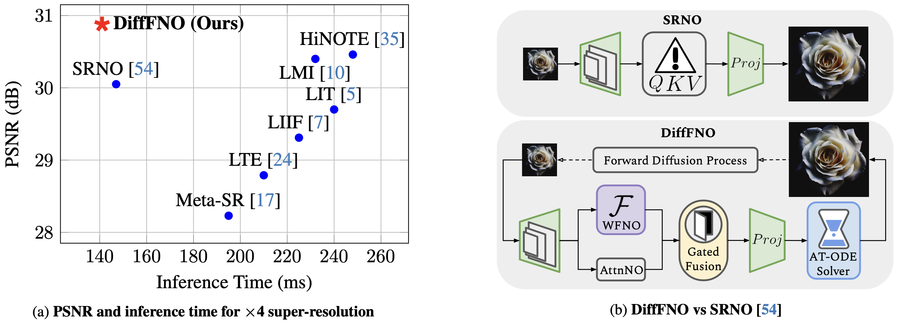
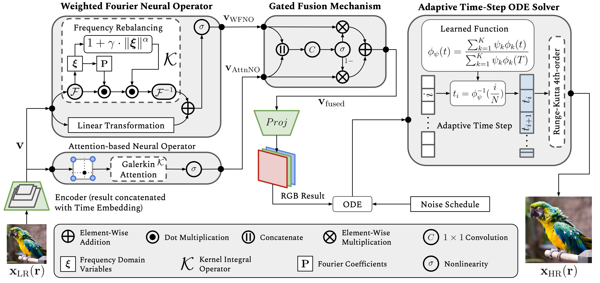
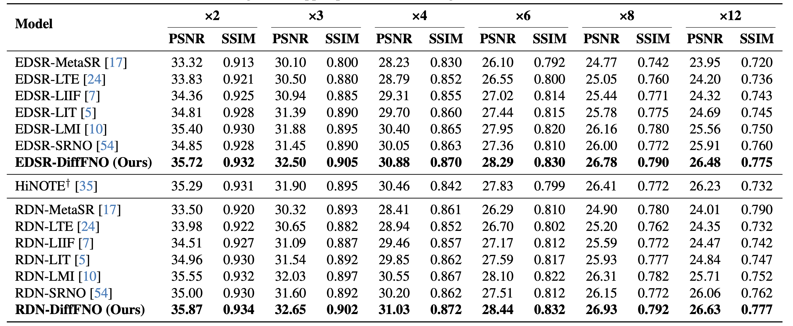

Qualitative Results

Sharper edges, richer textures.
Xiaoyi Liu1,
Hao Tang2
1Washington University in St. Louis
|
2Peking University

We introduce DiffFNO, a novel diffusion framework for arbitrary-scale super-resolution strengthened by a Weighted Fourier Neural Operator (WFNO). Mode Rebalancing in WFNO effectively captures critical frequency components, significantly improving the reconstruction of high-frequency image details. Gated Fusion Mechanism (GFM) adaptively complements WFNO’s spectral features with spatial features from an Attention-based Neural Operator (AttnNO). Adaptive Time-Step (ATS) ODE solver accelerates inference without sacrificing output quality. Extensive experiments demonstrate that DiffFNO achieves state-of-the-art results, outperforming existing methods by 2–4 dB in PSNR across various scaling factors and generalizing beyond training distributions—all at competitive inference times.

Architecture diagram.
Sharper edges, richer textures.

PSNR/SSIM on the DIV2K validation set across scales ×2–×12.
@inproceedings{liu2025difffno,
title={DiffFNO: Diffusion Fourier Neural Operator},
author={Liu, Xiaoyi and Tang, Hao},
booktitle={Proceedings of the Computer Vision and Pattern Recognition Conference},
pages={150--160},
year={2025}
}